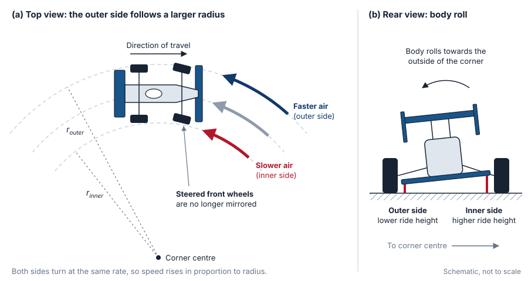

4. Problem of Interest
4.1 Asymmetrical Airflow During Cornering
The airflow over the car is no longer symmetrical when it corners (Figure 2). The outer side follows a larger radius than the inner side, so it meets faster air. The steered front wheels are no longer mirrored, so their wakes differ from side to side. Load transfer also pitches, rolls and heaves the car, which changes the ride height, and therefore the ground effect, on each side. Together, these effects make the left and right sides of the car generate unequal downforce.

4.2 Simulation-to-Manufacturing Geometry Mismatch
Simulations are run with the assumption that the surfaces are smooth and true-to-CAD. However, unexpected issues can arise during manufacturing that might lead to defects in geometry. As aerodynamics is sensitive to geometry, this will lead to the manufactured car performing differently to the simulation.